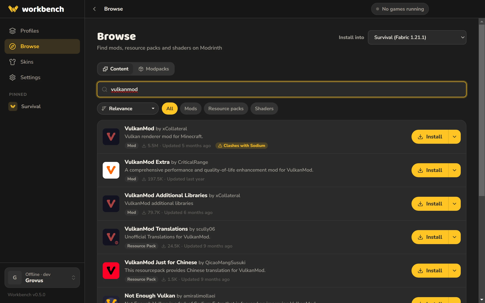

Your game crashed. Here’s why.
Workbench is a free Minecraft launcher for people who play with mods. It reads the log, tells you what broke in plain English, and fixes it in one click.
[13:42:07] [main/INFO]: Loading Minecraft 1.21.1 with Fabric Loader 0.16.10
[13:42:08] [main/ERROR]: Incompatible mods found!
net.fabricmc.loader.impl.FormattedException: Some of your mods are incompatible with the game or each other!
A potential solution has been determined, this may resolve your problem:
- Install sodium, version 0.6.0 or later.
- Install fabric-api, any version.
More details:
- Mod 'Iris' (iris) 1.8.1 requires version 0.6.0 or later of mod 'Sodium' (sodium), which is missing!
- Mod 'Sodium Extra' (sodium-extra) 0.6.0 requires any version of fabric-api, which is missing!
at net.fabricmc.loader.impl.FabricLoaderImpl.load(FabricLoaderImpl.java:207)
at net.fabricmc.loader.impl.launch.knot.Knot.init(Knot.java:142)
at net.fabricmc.loader.impl.launch.knot.KnotClient.main(KnotClient.java:23)These are the likely causes. Fix them, then press Play again.
-
Iris needs Sodium 0.6.0 or later, which isn’t installed.
-
Sodium Extra needs Fabric API, which isn’t installed.
Above: a real log and what Workbench says about it. Press a fix to try it.
It warns you before mods clash.
Some mods can’t be used together. Sodium and VulkanMod both replace the renderer, Iris and Oculus do the same job, OptiFine clashes with Sodium. Workbench knows, and tells you before you install the second one, with the option to turn the first one off.
Before every launch it also checks for missing dependencies, mods made for a different loader or Minecraft version, and the same mod installed twice.


Update everything. Except what you’re keeping.
Lock a mod to the version you have and updates leave it alone, in that profile only. Then check every profile at once, see exactly what will change, and update them together.


And the rest of a launcher, done properly.


- Worlds and servers
- Jump back into a world or join a server straight from the launcher on 1.20 and later.
- Modpacks
- Import
.mrpackfiles, or share your own profiles as.workbenchpacks. - Screenshots
- A gallery for every profile, so they don’t stay buried in a folder.
- Keeps itself current
- New versions download in the background and install next time you open it.
Questions
Windows says it’s from an unknown publisher. Is it safe?
The installer isn’t code-signed yet, so Windows SmartScreen doesn’t recognise it. Choose More info, then Run anyway. The source code is on GitHub, and every installer is built there from that code.
Can I sign in with my Microsoft account?
Not yet. Microsoft has to approve new launchers before they can sign in, and that approval is pending. Until then Workbench plays with an offline account, which works for singleplayer and LAN but not online servers.
What about CurseForge?
Browsing CurseForge is coming once CurseForge approves API access. Everything on Modrinth works today.
Does it work on Mac or Linux?
Windows only for now.
Does it cost anything?
No. Workbench is free.